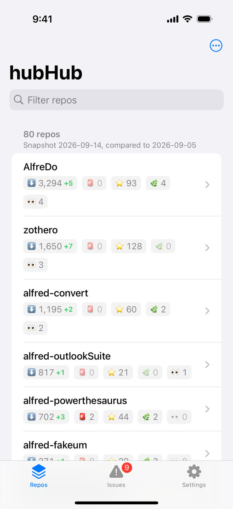
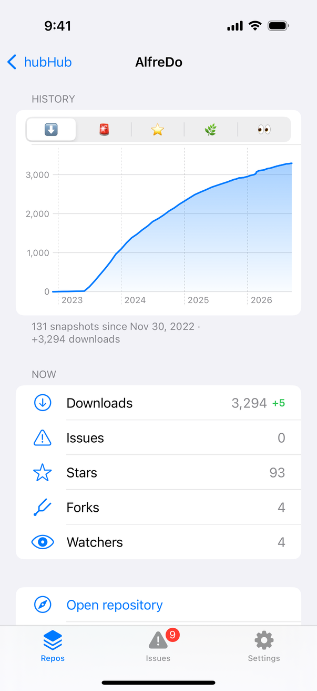
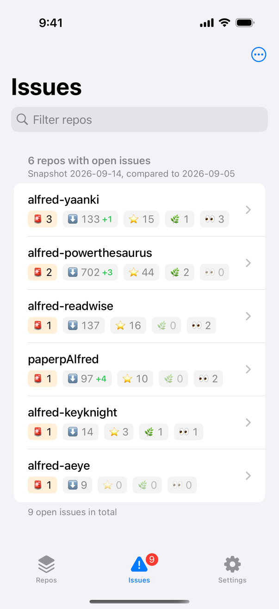
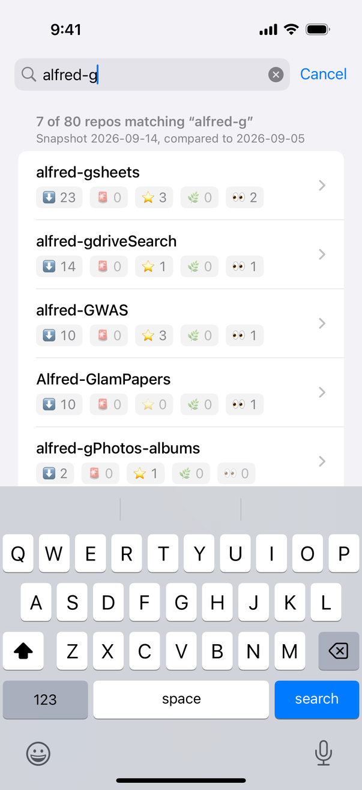

hubHub — Repo Stats
Your repos’ downloads & stars.
Fully offline, same data, right on your iPhone. The companion app to the hubHub Alfred workflow.




Your repos’ downloads & stars.
Fully offline, same data, right on your iPhone. The companion app to the hubHub Alfred workflow.




Release downloads, open issues, stars, forks and watchers — each with its change since the previous snapshot.
Counts every asset of every release, not just the first one.
A dedicated tab lists the repositories with open issues, ranked by count.
Tap any repo for its metrics charted over time, and jump straight to the repo or its issues.
Bring your existing download history over from the hubHub Alfred workflow.
A sample data mode lets you explore the app before adding your own token.
Everything is stored on-device. Your GitHub API token lives in the iPhone Keychain — no server, no analytics, no data collection.